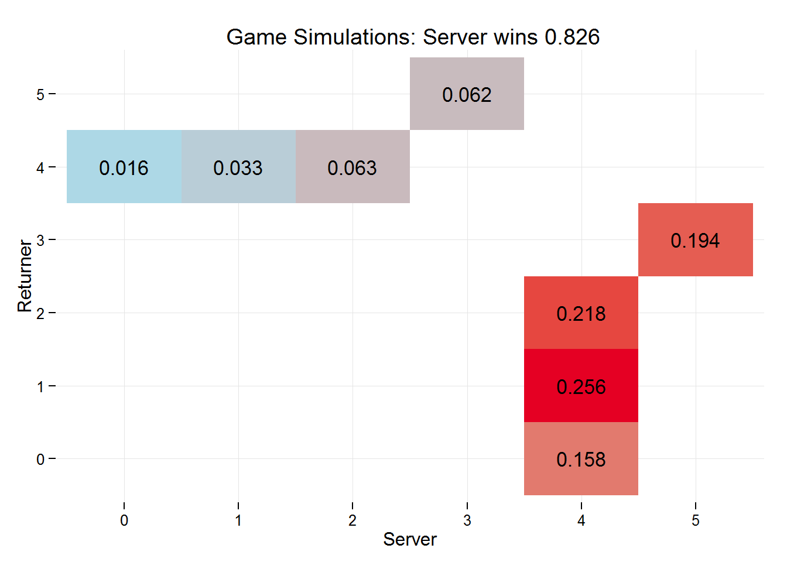

traders conference example workflow
data collection
R can be used to retreive data from many sources and in many different formats. R also has the potential, via some fantastic packages, to scrape/harvest data from the web, which is how we will collect data for the various tennis players we will need to look at.
We’ll use a number of R packages to do this, including jsonlite which is used to parse JSON data, and rvest which can be used on websites to target and select html tags and return the data found on webpages, so we will load the required libraries:
library(rvest)
library(stringr)
library(jsonlite)The ATP site contains a lot of data, and it can be filtered for various summary stats that are to be used in some of the servevolleyR functions.
tournaments
Collecting data about the various tournaments throughout the year will be useful, things like start date, end date, court surface, etc, can be used to either schedule future tasks, or filter relevant player data. The tournaments homepage appears to show all the tournaments from that calendar year, whether completed or not. To get this data we’ll use the rvest package built by Hadley Wickham (if you use R there’s a good chance you reside for part of the time in Hadleyverse), which can be used to easily harvest (scrape) web pages, and stringr (also by Hadley) to clean some of the data.
To make selecting the various elements of a webpage easier, we’ll also use the selectorgadget tool recommended by rvest. This tool allows you to hover over displayed content and will return the html tags to select that content, this is much easier than trawling through the raw HTML for tags (as I used to do). SelectorGadget can be seen in action to the right, as it selects the tournament names, and returns the tag .tourney-title that is to be used in the code below to harvest that data.

# read in HTML document
tourney_page <- html("http://www.atpworldtour.com/en/tournaments")
tourney <- tourney_page %>%
html_nodes(".tourney-title") %>%
html_text()
tourney_link <- tourney_page %>%
html_nodes(".tourney-title") %>%
html_attr("href")
tourney_location <- tourney_page %>%
html_nodes(".tourney-location") %>%
html_text() %>%
str_replace_all("[[:cntrl:]]", "")
tourney_date <- tourney_page %>%
html_nodes(".tourney-dates") %>%
html_text() %>%
str_replace_all("[[:cntrl:]]", "")
tourney_surface <- tourney_page %>%
html_nodes(".tourney-details:nth-child(2) .item-details") %>%
html_text() %>%
str_replace_all("[[:cntrl:]]", "")The code above returns vectors of data about the tournaments, the name (tourney), the url (tourney_link), the location (tourney_location), the date (tourney_date) and the surface (tourney_surface). One word of caution, web developers can change their sites, which can cause some of this code to break, so it may require updating and adjusting over time, but the tools are there to make this a relatively simple process. The vectors above can be combined into a dataframe, the first 6 rows are then printed, and we can also write the dataframe to a spreadsheet:
tourneys <- data.frame(name = tourney,
link = tourney_link,
venue = tourney_location,
date = tourney_date,
surface = tourney_surface,
stringsAsFactors = FALSE)
head(tourneys)## name link
## 1 Brisbane /en/tournaments/brisbane/339/overview
## 2 Chennai /en/tournaments/chennai/891/overview
## 3 Doha /en/tournaments/doha/451/overview
## 4 Sydney /en/tournaments/sydney/338/overview
## 5 Auckland /en/tournaments/auckland/301/overview
## 6 Australian Open /en/tournaments/australian-open/580/overview
## venue date surface
## 1 Brisbane, Australia 2015.01.04 - 2015.01.11 Outdoor Hard
## 2 Chennai, India 2015.01.05 - 2015.01.11 Outdoor Hard
## 3 Doha, Qatar 2015.01.05 - 2015.01.10 Outdoor Hard
## 4 Sydney, Australia 2015.01.11 - 2015.01.17 Outdoor Hard
## 5 Auckland, New Zealand 2015.01.12 - 2015.01.17 Outdoor Hard
## 6 Melbourne, Australia 2015.01.19 - 2015.02.01 Outdoor Hardplayer pages and data
Individual players stats are found on their own page, we need to know these individual urls in order to get the relevant data. This data can be quickly retrieved using R (or other programming languages), for either a collection of players or individuals, the url to the right returns a JSON object with the players name and the partial url to their profile page.
If we wanted to search for all players called andy then we can do it using the code below, which converts the JSON into a list with an items object that holds a nice dataframe of players and their urls. First we load the jsonlite package using libary(jsonlite), then use the fromJSON() function to parse the json, before printing the first 6 rows of our new dataset with head()

andy <- fromJSON("http://www.atpworldtour.com/-/ajax/playersearch/PlayerUrlSearch?SearchTerm=andy murray")
head(andy$items)## Key Value
## 1 Andy Murray /en/players/andy-murray/mc10/overview
## 2 Andy Sugg /en/players/andy-sugg/sf80/overview
## 3 Andy Schrecker /en/players/andy-schrecker/s590/overview
## 4 Andy Stewart /en/players/andy-stewart/s599/overview
## 5 Randy Rocchio /en/players/randy-rocchio/r710/overview
## 6 Andy Solis /en/players/andy-solis/s294/overviewIf you go to http://www.atpworldtour.com/en/players/andy-murray/mc10/overview, then it should take you to Andy Murray’s profile page, which includes various sections about the player. It takes you to the overview page, the data we want for the various functions found in servevolleyR is behind the player stats tab, shown below. When selecting that tab the url changes from overview to player-stats, this can be done in R using the following code:
(andymurray <- andy$items$Value[1])## [1] "/en/players/andy-murray/mc10/overview"(andymurray <- gsub("overview", "player-stats", andymurray))## [1] "/en/players/andy-murray/mc10/player-stats"The stats we need for servevolleyR functions are the win percentage on first serve, and ideally second serve win percentage and first serve in percentage. All of this can be scraped from the profile page, the code below creates the correct url and reads in the source of the webpage using the html function from rvest. It then extracts the tables from that page, returning two tables containing service stats and return stats; we only want the first table containing the service stats. It’s possible to get surface and seasonal stats, but for now we’ll just keep things simple and get career numbers:
(andymurray <- paste0("http://www.atpworldtour.com", andymurray))## [1] "http://www.atpworldtour.com/en/players/andy-murray/mc10/player-stats"andymurray_page <- html(andymurray)
(andymurray_service_stats <- andymurray_page %>%
html_table() %>%
.[[1]])## Service Record NA
## 1 Aces 4,663
## 2 Double Faults 1,675
## 3 1st Serve 58%
## 4 1st Serve Points Won 74%
## 5 2nd Serve Points Won 52%
## 6 Break Points Faced 4,099
## 7 Break Points Saved 63%
## 8 Service Games Played 8,443
## 9 Service Games Won 82%
## 10 Service Points Won 65%The data returned contains what we need but it isn’t in a usable format, the NA variable is a character vector, we need to select the relevant rows, and then clean the values by removing the punctuation and dividing the number by 100, so 58% becomes 0.58.
library(dplyr) # used to quickly manipulate data
names(andymurray_service_stats) <- c("stat", "value")
andymurray_service_stats <- andymurray_service_stats %>%
filter(grepl("1st Serve|2nd Serve", stat)) %>%
mutate(new_value = str_replace(value, "[[:punct:]]", ""),
new_value = as.numeric(new_value) / 100)
andymurray_service_stats## stat value new_value
## 1 1st Serve 58% 0.58
## 2 1st Serve Points Won 74% 0.74
## 3 2nd Serve Points Won 52% 0.52servevolleyR
The stats can now be used with the functions from servevolleyR, we’ll just use the simGame and simGames functions for now, which simulate service games. simGame returns a 1 if the server wins and a 0 if the returner wins.
library(servevolleyR)
simGame(p = andymurray_service_stats[2,3],
p2 = andymurray_service_stats[3,3],
firstServe = andymurray_service_stats[1,3])## [1] 1# we can use the replicate function to repeatedly use the simGame function and log the results in a vector
results <- replicate(1000, {
simGame(p = andymurray_service_stats[2,3],
p2 = andymurray_service_stats[3,3],
firstServe = andymurray_service_stats[1,3])
})
table(results)## results
## 0 1
## 161 839So Andy Murray won 0.839 of his service games. Alternatively, we can use the simGames function to simulate many games but return a lot of simulated data about those games, rather than the binary response returned by simGame. The simGames function returns a list with a few generic methods, which means the results can be printed, summarised or plotted.
results2 <- simGames(n = 1000,
p = andymurray_service_stats[2,3],
p2 = andymurray_service_stats[3,3],
firstServe = andymurray_service_stats[1,3])
results2##
## Simulation of 1000 service games:
## Server won 0.826 (826/1000) of games.
##
## Server probabilities:
## p p2 firstServe
## 0.74 0.52 0.58summary(results2)##
## Simulation of 1000 service games:
## Server won 0.826 (826/1000) of games.
##
## Server probabilities:
## p p2 firstServe
## 0.74 0.52 0.58
##
## Service Game scores:
## returner
## server 0 1 2 3 4 5
## 0 0.016
## 1 0.033
## 2 0.063
## 3 0.062
## 4 0.158 0.256 0.218
## 5 0.194plot(results2)